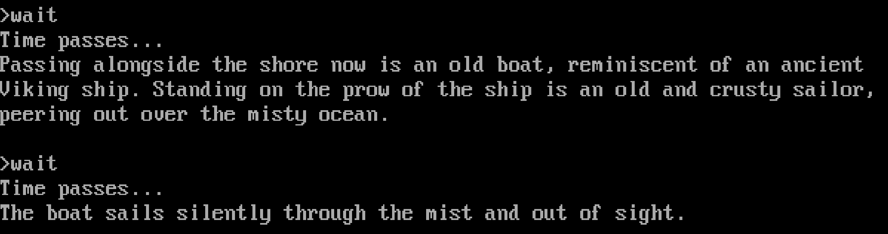
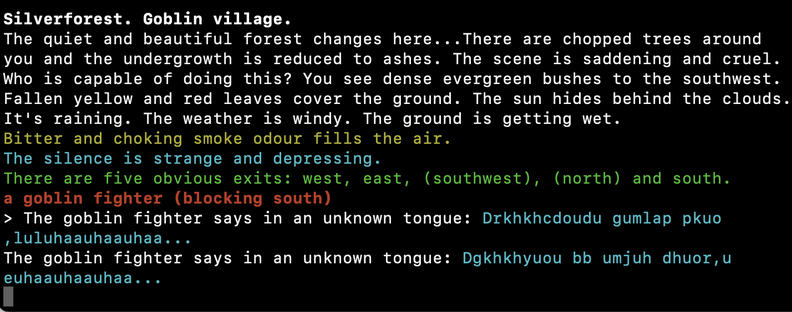

Introduction
If you venture north of the art gallery in Zork I, you'll find a paper attached to the wall:
>EXAMINE PAPER
CONGRATULATIONS!
YOU ARE THE PRIVILEGED OWNER OF A
GENUINE ZORK GREAT UNDERGROUND EMPIRE
(PART I), A SELF CONTAINED AND SELF
MAINTAINING UNIVERSE. IF USED AND
MAINTAINED IN ACCORDANCE WITH NORMAL
OPERATING PRACTICES FOR SMALL UNIVERSES,
ZORK WILL PROVIDE MANY MONTHS OF
TROUBLE-FREE OPERATION. PLEASE CHECK
WITH YOUR DEALER FOR PART II AND OTHER
ALTERNATE UNIVERSES.
I quite liked the idea of a self-contained and self-maintaining universe, as well as alternate universes, and thought I might try to create a system for creating and playing with them.
This project is a library for a kind of single-player MUD, or maybe "open world" "interactive fiction". I don't know if the idea makes any sense at all. I've had some great experiences playing MUDs, roguelikes, and interactive fiction over the years, and this is an attempt to capture and expand on some of that. Perhaps in a form that I might work on for the rest of my life, my own personal Dwarf Fortress.
In this "book," I'm going to try to formally structure my ideas a bit in a more narrative form than GitHub Projects, issues, epics, etc allow. I expect this project to take quite a while, assuming I live to complete it, so I figure it's worth getting things down on paper (so to speak).
"Hello, Sailor!"
On the shores of the Flathead Ocean, you'll eventually encounter a strange apparition:

I remember, as a kid, restoring at this point dozens of times. I yelled all manner of things. I followed his ship (as the description would indicate, it's gone by the time you enter the next room). I tried everything but the actual solution, which is to yell "Hello, Sailor!".
The resolution to that joke was a long time coming, but I missed it completely, even though I was playing the three Zork games, switching between them whenever I got stuck with one.
Anyway, my overachievement at object permanence and underachievement at everything else is not the point. The point is that this melancholy and lost grandeur did affect me, as silly as Zork is. Flood Control Dam #3 has a similar effect. I feel some degree of horror at the plight of the adventurer in the twisty passages maze; perhaps we're to assume that he never managed to find his way out... but the curse of the rusty knife is a compelling alternative explanation.
And who was it that kept shutting and barring the damned trapdoor, anyway?
The Dungeon Master, supposedly, but I don't really like that answer. It feels a little intrusive, a little too neat. Was the Dungeon Master a thing in Zork I? It feels... plotted.
Now, interactive fiction is just that – plotted, authored. And it probably works best like that, with the flexibility high but the editorial process working to trim the fat and ensure a clean, well-shaped story. The best interactive fiction is dedicated to the service of the story. As it should be.
And yet...
I feel like there's room for a more open-ended experience; one that is compelling more from the joy of exploration than careful plotting, from mystery and emergent phenomena than the satisfaction of puzzle pieces clicking into place.
I don't know that this is the case, nor do I know I'm capable of manifesting it. I'm not even sure what I'm describing, exactly.
Programmable Realities
It probably seems obvious now, but the Quake console kind of blew my mind when I first saw it.

I'd typed idkfa into Doom before, and a couple of other games where you could type strings into an un-spellchecked void and possibly be rewarded with more health or bullets or whatever, but the Quake console was obviously different. It was a whole thing that came down from the top of your screen and even stayed there after you entered a command. It had its own inscrutable syntax. If you typed "give health", then... well, it didn't react exactly as you expected, but it did something. Sitting there in front of your beige PC with a printed out cheat sheet, you could do some very interesting things, some productive, some not-so-productive.
Much more impressive (honestly, I still barely know how to use it) is Minecraft's console:

Minecraft's console allowed you to do more than just give yourself health or move you -- it seems to provide the ability to control most of the game.
But all of this probably pales in comparison to the in-game scripting made possible by e.g. LPMUDs, which are intended to be developed by the people playing them, even (sometimes) while the application is running.
At some point, I decided that if I ever made a game, I'd thoroughly integrate a scripting language.
The uses are many:
- scrutiny of objects during the development process for debugging, etc.
- scripting objects for automated tests
- modifying behaviors at runtime
- loading scripts to modify app or object behavior
- etc.
Some time back, while taking one of my several abortive attempts at a roguelike, I became aware of Robert Nystrom, and greatly enjoyed his first book, Game Programming Patterns.
Imagine my joy when I saw that he'd written a book, Crafting Interpreters, consisting of an intensive walkthrough of writing a programming language interpreter and compiler!
So I made the decision to use Bob's Lox language as a foundation for my own language.
Of course, that's only the beginning; I need to extend the language to increase its usefulness, and I need to build out the standard library. And, once that is complete, I need to make it so that other parts of this system are able to provide their own innards for consumption to running scripts.
(Actually, I think performance is enough of a concern that I'll just use Lua. Possibly I'll shift to a custom language eventually, but that's difficult to envision given Lua's strengths.)
But for now I'm going to switch focus again...
Dungeons and the Underdark
In keeping with the general weirdness and paucity of the rest of my video gaming experience in the 1990's...
When people talk about dungeon crawlers, I don't so much think of Eye of the Beholder or Diablo or Ultima Underworld or The Bard's Tale. Rather, it's Wizardry VI: Bane of the Cosmic Forge.

And only that one, because I've never actually played any of the other Wizardry games.
Bane of the Cosmic Forge, like Zork and The Goonies II, fits into the large category of games that I never managed to beat without a walkthrough. It's another ridiculously difficult game.
It's like Zork in that it assumes that you are carefully mapping every move you make. It's also like Zork in that it will cheerfully allow you to render the game unwinnable. Unlike Zork, it doesn't have the mechanism of the lantern's batteries limiting the amount of time you're actually able to play the game. In my case, I played the game for, I think, a few years without realizing I'd managed to jam a door that was critical for further progression. Every once in a while I'd start playing the game, mosey around the dungeon a bit, and not make any progress, and of course blame myself for my stupidity.
Sir-Tech also had a phone line you could call in for hints. I don't recall them doing me much good.
But this isn't really about my grievances with ridiculously difficult relics, but what I actually find enjoyable and compelling about these games.
Sidenote: I recently played through the three Zork games with my kid. I still needed walkthroughs. And he was, like me, baffled by the puzzles and mazes and frustrated that they even made it into the game. I explained that the thinking at the time was that you were going to be mapping the game with pen and paper as you played it, but I'd never realized that when I played them. All the same, that doesn't seem a terribly satisfying rationalization to me, 25-30 years later.
No, I really enjoyed the atmosphere and the structure of the dungeon, and exploring it. It's true that every bit of the dungeon looked like every other bit of the dungeon. And in fact the belfrey and the mines and the River Styx and the pyramid and even the damned forest looked like every other bit of the dungeon, which is... kind of amazing now. How hard would it have been to make a second tileset?
But I digress.
In some areas, particularly around the castle towers, there were lovely bits of text as you explored.

Even in the graphical CRPGs of the time, they frequently had to add text to fill in the details of what the characters were experiencing. And it's those bits of text that really made the dungeon interesting.

Seriously, what is that about? Of course, you can't ask, because you don't have any kind of prompt except in the brief dialogues you can enter with a few of the NPCs.
I think it's worth thinking about Zork, a dungeon crawler text adventure, Bane of the Cosmic Forge, a first-person dungeon crawler, an LPMUD like After the Plague II, and the general Rogue-like top-down grid-based dungeon crawler. Compare and contrast. Discuss their strengths and weaknesses.
Zork has by far the most interesting environments, but it cannot graphically render them. Similarly, an LPMUD can have quite wonderful environments, better than Zork's conceivably, but in practice this is limited by the literary abilities of the users crafting the MUD. Bane of the Cosmic Forge and Rogue are similarly limited to extremely repetitive views, and both can conceivably lean on text to add a bit of flavor that would otherwise be lacking.
Bane of the Cosmic Forge offers a traditional RPG combat system, while Zork had a very limited system that has, apparently, fallen by the wayside as interactive fiction has developed. Rogue has a highly technical combat system, similar to Bane of the Cosmic Forge, and it's turn-based (which tends to appeal to a more methodical mindset, I think). A MUD has a realtime combat system with cooldowns and rate-limiting to avoid cheating, which makes it more like an action RPG like Diablo or EverQuest.
Frankly, mapping is a bore, and I doubt most people did it even when Zork or Bane of the Cosmic Forge came out. Of course, you have to just to be able to beat the damned games. Rogue is king here because it does the mapping for you. That's... maybe the only thing that makes them tolerable. MUDs often benefit greatly from mapping, but some MUD clients offer automapping, and the MUD is generally designed to not require mapping, being as it is crafted by people who don't like mapping any more than you do.
I've contemplated having this game switch to a roguelike interface when in dungeons/dwarven kingdoms/underdark, but I feel like that's a cheap, easy answer that also happens to be wrong. Part of what I don't really like about roguelikes is the endless screens of empty rooms with ridiculously long hallways and little or nothing in the way of character. Sure, there are exceptions, like Brogue, which I have to say is gorgeous...


But still incredibly repetitive.
Now, when I was 14 or 15 or something, I started making an open-world interactive fiction game with TADS and I think I stopped because I couldn't find a Pascal compiler, which I needed because I wanted to increase the constant for the maximum number of rooms allowed, which I wanted to do so I could create like a thousand rooms that were nearly identical forest or grassland or whatever. I really wanted you to feel that open world.
I'm no longer that big of an idiot.
But the fact remains that repetitive text rooms are just as bad as repetitive dungeon rooms. Probably incalculably worse, actually, because you have to go to the effort of reading a room description and realizing it's the same damned thing you've already read. At least with a roguelike you can pick it up at a glance, and see the l that means there's a fire lizard on the other room about to attack you so there's at least something interesting.
The point is that I don't think that simply writing a text version of a roguelike dungeon crawl is going to be a satisfying (or even bearable) experience. And that I really, really have to be careful with repetition in room descriptions. Every room needs to at least feel as though it was created with intent.
One thing I like about Zork, and which I think is necessary for a text dungeon crawl, is that rooms all have some unique descriptor. The Loud Room. The Dome Room. The Carousel Room. The Damp Passage. The Treasure Room. Not all rooms are like this, of course, but I think almost all rooms are at least this distinctive.
This is a difficult idea to translate into the open world. The real world is repetitive. So why wouldn't an open world, even in a fantasy game, be similarly repetitive? But the moment a player types "w. w. w. w. w." and passes through five identical (or even similar) rooms, they're going to quit the game and never pick it up again. And understandably so. I would too! That doesn't fill me with a sense of awe and wonder at the scale of this world/forest/dungeon/cavern. It fills me with irritation that the developer has so little regard for my time.
Cosmos and Tatooine
It's more of a "huh, that's interesting" moment than the amazing shot of the Star Destroyer pursuing the Corvette, and nowhere near as bizarre as the Cantina scene, but the depiction of Tatooine with two suns has stuck with me. We tend to connect that with Tatooine's barrenness and inhospitality. It just makes sense.
Connected with this, the ideas of what other worlds might look like from Carl Sagan's Cosmos: strange organisms like hot air balloons, caves overlooking cold oceans, moons of gas giants... I can't remember which were things he described and which were painted by artists.
Of course, now art from speculative fiction, art from imaginary worlds, it's immediately accessible. Thirty-some years ago it was highly curated, shall we say. A planet with two suns, or an icy waste orbiting a white dwarf, was just about as good as it gets.
I'm at best a middling mind and not likely to create a world with actually realistic and thought-provoking species. Silicon-based organisms that breathe through their butts and have four rods and seven cones and three legs or whatever. I'm fine with that, because this is a text-based game, after all, and I don't want to say things like:
A flormgas enters from the west.
>l flormgas
The flormgas is a silicon-based organism that breathes through its anus.
Its vision is exceptionally sharp and rich, owing to its four rods and seven
cones.
The flormgas waves its third leg at you menacingly.
The flormgas unsheathes its sponcül and swings it at your head!
Ultimately, this sort of text game needs to convey what is happening concisely, and I would rather write about goblins and elves and even nightgaunts than the Greater Yuridian Flormgas, however majestic its polyric crest might be.
Nevertheless, I do want to take into account the effects of different astronomical configurations. How might goblins on Tatooine differ from goblins on Yavin IV? Or Hoth?
The astronomy system (formerly known as Starfall) is intended to make this kind of thing possible, by actually generating a plausible habitable star system where an adventure might take place. Create a sun -- or binary, or even a ternary or quaternary configuration. Put a planet in orbit around it, with variable characteristics like axial tilt and mass and composition and albedo and water content. Perhaps give it a moon, or two, or not.
Now: what is the atmosphere like? Does it have seasons? How long are the day, the month, the year? What does the day look like? The night sky?
The Golden Bough
My apologies to Sir James Frazer, because I haven't actually read The Golden Bough.
But I've read a small amount of literature on comparative mythology, watched some conspiracy theory videos (with appropriate skepticism, fear not), and read probably more Joseph Campbell than I should've.
One idea I've encountered is that the story of Jesus is a sort of astronomical allegory, reënacting an ancient solar myth featuring the life, death, and rebirth of a solar deity who warms and nurtures the crops, whose death heralds the depths of winter, and whose return signifies new life for the crops and for humanity.
So what might people believe on a planet with no axial tilt, without meaningful seasons?
What might the religions of goblins look like?
What might the religions of goblins look like if they are traditionally dominated by hobgoblins? If that domination looks more like paternalism or hegemony? Or brutal enslavement?
What might religions look like in fantasy worlds with actual deities? If believing makes a deity real, what deities form?
How might the stars be divided into constellations? Can the stars along the ecliptic form a zodiac?
I think these are interesting questions, and I'd like to try to create some interesting systems for answering them.
The Goblin Village
One of my favorite gaming experiences of all time is from a Hungarian MUD, After the Plague II. I was lost in the woods, southwest of Elements City, walking into dead ends, running low on food, probably walking in circles. I saw (high perception score) a hidden path to the south, between thorn bushes. I walked through (getting cut up in the process), and happened upon this:

Now, this in itself isn't the greatest thing, but a couple rooms south you find two goblin children who play and fight with one another. If their ball is retrieved for them from a nearby quest, they'll play catch with each other, and with you. If it is winter, and there is snow on the ground, they will have a snowball fight with you. Having a snowball fight with goblin children is a fond memory of mine.
There are other interesting interactions elsewhere in the goblin village. There appears to be a caste system, with some goblins being slaves. Above these are fighters. A cook is an important figure too. There's a shaman – predictably tough – and a huge red-eyed goblin – very tough. They have little scripts that they act out as you watch; a goblin slave grows tired and sits down to rest, then a fighter berates him, and the slave stands up again wearily. Sometimes a fight will start, continuing until one or both pass out from exhaustion (these fights are not, in my experience, fatal, but not for lack of trying).
Throughout, the goblins punctuate the player's experience with mutterings from their own language. This is a simple system: liquid phonemes are replaced with fricatives, etc. Similar replacements are performed for other languages, according to some sensible rules.
Of course, the cracks will become readily apparent. As the player learns the language, individual letters -- not syntax or words -- are transformed. Outside of the simple scripts and their manipulation of the various systems available in the mudlib, there is no meaningful artificial intelligence. The goblins will respawn if they are murdered, so that the next adventurer can raze the village. And the next... and the next...
But it can create meaningful experiences.
Minecraft and Chunk-Loading
This morning I had a dream that I was back in college, at the University of New Mexico, which I briefly attended back in 2000. Weirdly, I was aware that it was 2024, because of an exchange within the dream about which I don't recall anything else.
I was looking for a friend who I knew was attending that school; in the dream, it was Isaac H., but it was very similar to another recent dream I had where I was trying to find Sam W. at the same school. I knew, or at least suspected, that my friend did not want to see me and was avoiding me.
It was the last day of school; finals were taken, but, in some weird throwback to middle school and high school everyone had to attend for one more day. The last day of school was always... lonely. I felt a sense of freedom, of course, all those summer weeks for activities. But it felt empty, and I felt alone. I could feel my friends slipping away from me.
I bumped into some students as I traipsed around the campus. I saw a marijuana dispensary and thought, "huh, that's right, that's legal now," but I didn't particularly want to get high. It made me sad, just thinking about it. I found my way into a basement, and some kids blocked me at the door; there was a party under way, and they didn't feel very charitable. I laughed and told them I didn't drink, but I didn't have a problem buying my own beer anyway.
I woke up sad,